0. 概要
ブロック・ボリューム とベア・メタル・インスタンスを使用してNFSでサービスするファイル共有ストレージ（以降ブロック・ボリュームNFSサーバと呼称）は、NFSのマネージドサービスである ファイル・ストレージ のNFSサーバに相当する マウント・ターゲット がHA化され可用性が担保されているのに対し、NFSサーバのベアメタルインスタンスが単一障害点となり、インスタンスが障害で起動しなくなった場合ファイル共有サービスが停止します。
ただこの場合でも、起動しなくなったベアメタルインスタンスと同一構成の新たなインスタンスをデプロイし、このインスタンスに既存の ブロック・ボリューム をアタッチしてファイルシステムとしてマウントすることで、復旧作業時間に相当する数時間程度のサービス停止を経て、障害発生前のデータ領域のままNFSサービスを再開することが可能です。
この復旧シナリオの前提は、 ブロック・ボリューム でサービスするストレージ領域がLinuxの論理ボリュームマネージャで構築されていることです。論理ボリュームマネージャは、物理ボリューム・ボリュームグループ・論理ボリューム等のメタデータをOS上には持たず（キャッシュ情報は除く）に ブロック・ボリューム 上に保持するため、論理ボリュームマネージャをサポートするOSが稼働する別のインスタンスにアタッチすることで、ストレージ領域にアクセスできるようになります。
また本復旧シナリオは、障害時に既存の代替となるNFSサーバインスタンスをデプロイする際、ブロック・ボリュームNFSサーバの構築直後に取得するNFSサーバ用インスタンスの カスタム・イメージ を活用し、復旧に要する時間が最小となるよう配慮します。
次に、 ブロック・ボリューム に障害が発生してストレージ領域にアクセスできなくなる障害シナリオには、どのように対処すれはよいでしょうか。
ブロック・ボリューム は、同一 可用性ドメイン 内の異なる フォルト・ドメイン に複数のレプリカを持ち、NFSサーバのベア・メタル・インスタンスと比較して桁違いに高い可用性を提供します。
このため本テクニカルTipsは、NFSサーバに使用するベア・メタル・インスタンス障害の復旧シナリオにフォーカスし、これを解説します。
本復旧シナリオは、NFSサーバのOSに Oracle Linux 、ストレージ領域の管理にLinuxの論理ボリュームマネージャを使用し、以下のように構成されていることを前提とします。
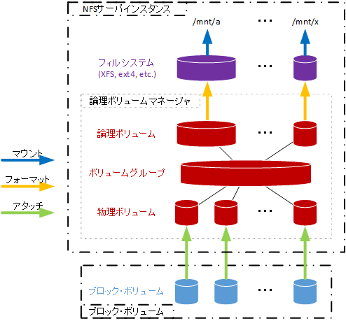
以上より、本テクニカルTipsで解説する復旧シナリオは、以下のステップを経て行います。
[障害発生前]
- 代替NFSサーバインスタンス事前準備
[障害発生後]
- 代替NFSサーバインスタンスデプロイ
- ブロック・ボリューム の既存NFSサーバインスタンスからのデタッチ
- ブロック・ボリューム の代替NFSサーバインスタンスへのアタッチ
- 代替NFSサーバインスタンスでの復旧作業
- NFSクライアントでの復旧作業
以降の章は、このステップに沿って具体的な復旧手順を解説します。
なお、本構成の ブロック・ボリューム NFSサーバは、 マーケットプレース から無料で利用可能な スタック を利用して自動構築する事が可能で、詳細は OCI HPCチュートリアル集 の ブロック・ボリュームでNFSサーバを構築する を参照してください。
1. 復旧手順
1-0. 前提環境
本章は、以降の章で解説する具体的な復旧手順に於いて、その前提となる ブロック・ボリューム NFSサーバの構成を解説します。
本テクニカルTipsをご自身の環境に適用する際は、ホスト名、 ブロック・ボリューム 名、論理ボリュームマネージャの情報等をご自身の環境に置き換えて、実行してください。
- 既存NFSサーバホスト名: nfs-srv-1
- 代替NFSサーバホスト名: nfs-srv-2
- NFSクライアントホスト名: nfs-cli
- ブロック・ボリューム 名・容量: bv1 (1 TB), bv2 (1 TB)
- 物理ボリューム名: /dev/sdb, /dev/sdc
- ボリュームグループ名: vg1
- 論理ボリューム名: lv01
- NFSサーバローカルマウントポイント: /mnt/a
- NFSクライアントNFSマウントポイント: /mnt/nfs/a
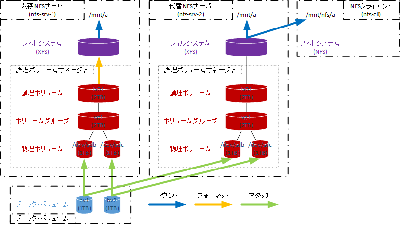
1-1. 代替NFSサーバインスタンス事前準備
1-1-0. 概要
本章は、代替NFSサーバインスタンスが早期にNFSサービスを開始できることを目的とし、既存NFSサーバインスタンスから カスタム・イメージ を取得します。
この際、代替NFSサーバインスタンスをデプロイした直後は、 ブロック・ボリューム をアタッチするまでNFSデータ領域ファイルシステムをマウント出来ないことを考慮し、必要な修正を行った後に カスタム・イメージ を取得します。
具体的には、以下の手順を実施します。
- NFSサービス停止
- NFSデータ領域ファイルシステムアンマウント
- /etc/fstab修正
- ブロック・ボリューム のデタッチ
- カスタム・イメージ 取得
- ブロック・ボリューム のアタッチ
- /etc/fstab修正
- NFSデータ領域ファイルシステムマウント
- NFSサービス開始
1-1-1. カスタム・イメージ取得
本章は、既存NFSサーバインスタンスで カスタム・イメージ を取得します。
以下コマンドを nfs-srv-1 のopcユーザで実行し、NFSサービスを停止します。
$ sudo systemctl disable --now nfs-server
次に、以下コマンドを nfs-srv-1 のopcユーザで実行し、NFSデータ領域ファイルシステムをアンマウントします。
$ sudo umount /mnt/a
次に、 nfs-srv-1 の/etc/fstabファイルを以下のとおり修正します。
$ diff /etc/fstab_org /etc/fstab
32c32
< /dev/vg1/lv01 /mnt/a xfs defaults 0 0
---
> #/dev/vg1/lv01 /mnt/a xfs defaults 0 0
$
次に、OCIコンソールにログインし、 ブロック・ボリューム NFSサーバの存在するリージョンを選択後、 ストレージ → ブロック・ボリューム とメニューを辿ります。
次に、表示される以下画面で、bv1 ボタンをクリックします。
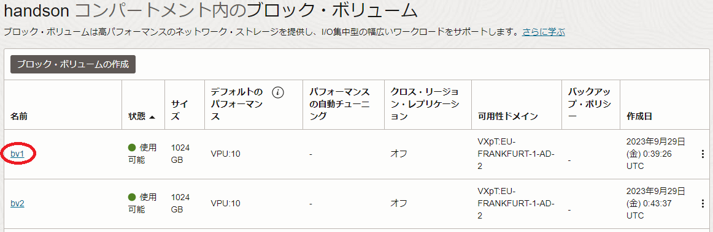
次に、表示される以下画面で、 アタッチされたインスタンス メニューをクリックします。
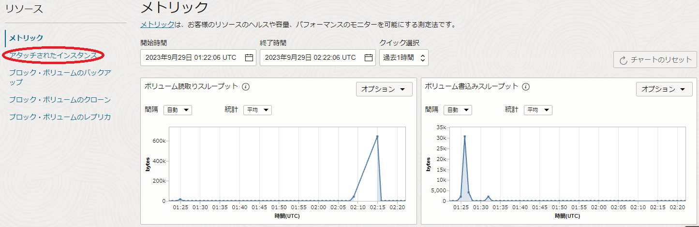
次に、表示される以下 アタッチされたインスタンス フィールドで、 nfs-srv-1 の iSCSIコマンドおよび情報 ボタンをクリックします。
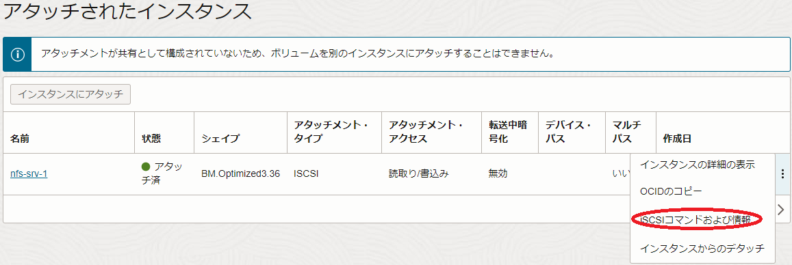
次に、表示される以下 iSCSIコマンドおよび情報 画面で、 デタッチ・コマンド フィールドの コピー ボタンをクリックし、 閉じる ボタンをクリックします。
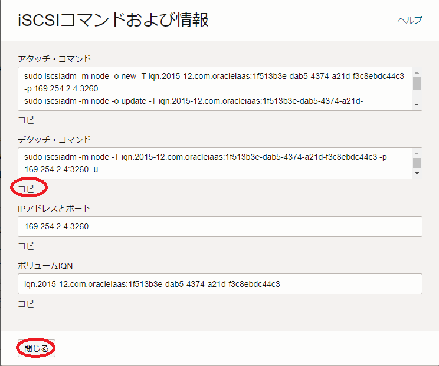
次に、クリップボードにコピーされたコマンドを以下のように nfs-srv-1 のopcユーザで実行し、物理ボリューム sdb がlsblkコマンドの出力に表示されないことを確認します。
$ sudo iscsiadm -m node -T iqn.2015-12.com.oracleiaas:1f513b3e-dab5-4374-a21d-f3c8ebdc44c3 -p 169.254.2.4:3260 -u
Logging out of session [sid: 3, target: iqn.2015-12.com.oracleiaas:1f513b3e-dab5-4374-a21d-f3c8ebdc44c3, portal: 169.254.2.4,3260]
Logout of [sid: 3, target: iqn.2015-12.com.oracleiaas:1f513b3e-dab5-4374-a21d-f3c8ebdc44c3, portal: 169.254.2.4,3260] successful.
$ sudo iscsiadm -m node -o delete -T iqn.2015-12.com.oracleiaas:1f513b3e-dab5-4374-a21d-f3c8ebdc44c3 -p 169.254.2.4:3260
$ lsblk
NAME MAJ:MIN RM SIZE RO TYPE MOUNTPOINT
sda 8:0 0 50G 0 disk
├─sda1 8:1 0 100M 0 part /boot/efi
├─sda2 8:2 0 1G 0 part /boot
└─sda3 8:3 0 48.9G 0 part
├─ocivolume-root 252:0 0 38.9G 0 lvm /
└─ocivolume-oled 252:1 0 10G 0 lvm /var/oled
sdc 8:16 0 1T 0 disk
└─vg1-lv01 252:2 0 2T 0 lvm
nvme0n1 259:1 0 3.5T 0 disk
$
なお上記コマンドは、本テクニカルTipsを作成する際に使用している環境に於けるもので、実際には自身がOCIコンソールからクリップボードにコピーしたコマンドを使用します。
次に、以上の bv1 に対して実施した手順を bv2 に対して実行してこれをデタッチし、物理ボリューム sdc がlsblkコマンドの出力に表示されないことを確認します。
次に、 nfs-srv-1 の カスタムイメージ を取得します。
カスタム・イメージ の取得方法は、OCI公式ドキュメントの ここ を参照ください。
なお カスタム・イメージ 取得中は、当該インスタンスが停止することに留意します。
次に、OCIコンソールで、 ストレージ → ブロック・ボリューム とメニューを辿ります。
次に、表示される以下画面で、bv1 ボタンをクリックします。
次に、表示される以下画面で、 アタッチされたインスタンス メニューをクリックします。
次に、表示される以下 アタッチされたインスタンス フィールドで、 nfs-srv-1 の iSCSIコマンドおよび情報 ボタンをクリックします。
次に、表示される以下 iSCSIコマンドおよび情報 画面で、 アタッチ・コマンド フィールドの コピー ボタンをクリックし、 閉じる ボタンをクリックします。
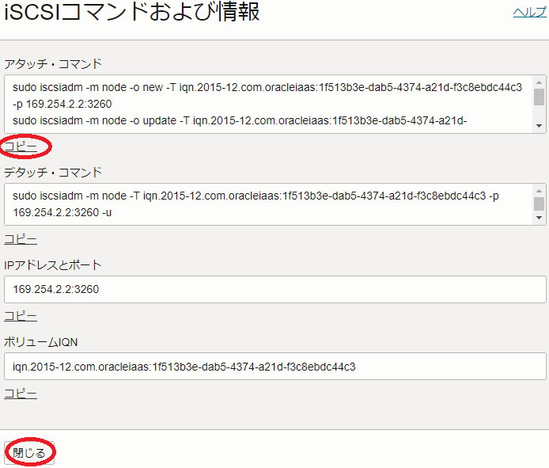
次に、クリップボードにコピーされたコマンドを以下のように nfs-srv-1 のopcユーザで実行し、lsblkコマンドの出力に物理ボリューム sdb が含まれることを確認します。
$ sudo iscsiadm -m node -o new -T iqn.2015-12.com.oracleiaas:1f513b3e-dab5-4374-a21d-f3c8ebdc44c3 -p 169.254.2.2:3260
New iSCSI node [tcp:[hw=,ip=,net_if=,iscsi_if=default] 169.254.2.2,3260,-1 iqn.2015-12.com.oracleiaas:1f513b3e-dab5-4374-a21d-f3c8ebdc44c3] added
$ sudo iscsiadm -m node -o update -T iqn.2015-12.com.oracleiaas:1f513b3e-dab5-4374-a21d-f3c8ebdc44c3 -n node.startup -v automatic
$ sudo iscsiadm -m node -T iqn.2015-12.com.oracleiaas:1f513b3e-dab5-4374-a21d-f3c8ebdc44c3 -p 169.254.2.2:3260 -l
Logging in to [iface: default, target: iqn.2015-12.com.oracleiaas:1f513b3e-dab5-4374-a21d-f3c8ebdc44c3, portal: 169.254.2.2,3260]
Login to [iface: default, target: iqn.2015-12.com.oracleiaas:1f513b3e-dab5-4374-a21d-f3c8ebdc44c3, portal: 169.254.2.2,3260] successful.
$ lsblk
NAME MAJ:MIN RM SIZE RO TYPE MOUNTPOINT
sda 8:0 0 50G 0 disk
├─sda1 8:1 0 100M 0 part /boot/efi
├─sda2 8:2 0 1G 0 part /boot
└─sda3 8:3 0 48.9G 0 part
├─ocivolume-root 252:0 0 38.9G 0 lvm /
└─ocivolume-oled 252:1 0 10G 0 lvm /var/oled
sdb 8:16 0 1T 0 disk
nvme0n1 259:1 0 3.5T 0 disk
$
なお上記コマンドは、本テクニカルTipsを作成する際に使用している環境に於けるもので、実際には自身がOCIコンソールからクリップボードにコピーしたコマンドを使用します。
次に、以上の bv1 に対して実施した手順を bv2 に対して実行してこれをアタッチし、lsblkコマンドの出力に物理ボリューム sdc が含まれることを確認します。
次に、 nfs-srv-1 の/etc/fstabファイルを以下のとおり修正します。
$ diff /etc/fstab_org /etc/fstab
31c31
< #/dev/vg1/lv01 /mnt/a xfs defaults 0 0
---
> /dev/vg1/lv01 /mnt/a xfs defaults 0 0
$
次に、以下コマンドを nfs-srv-1 のopcユーザで実行し、NFSデータ領域ファイルシステムをマウントし、作業開始前のデータが存在していることを確認します。
$ sudo systemctl daemon-reload
$ sudo mount /mnt/a
$ df -h /mnt/a
Filesystem Size Used Avail Use% Mounted on
/dev/mapper/vg1-lv01 2.0T 15G 2.0T 1% /mnt/a
$ ls -la /mnt/a
total 4
drwxr-xr-x 2 root root 22 Sep 29 12:32 .
drwxr-xr-x. 3 root root 15 Sep 29 10:12 ..
-rw-r--r--. 1 root root 210 Sep 29 10:24 test.txt
$
次に、以下コマンドを nfs-srv-1 のopcユーザで実行してNFSサービスを開始し、 /mnt/a がエクスポートされていることを確認します。
$ sudo systemctl enable --now nfs-server
Created symlink /etc/systemd/system/multi-user.target.wants/nfs-server.service → /usr/lib/systemd/system/nfs-server.service.
$ sudo exportfs
/mnt/a 10.0.0.0/16
$
1-2. 代替NFSサーバインスタンスデプロイ
本章以降の手順は、既存NFSサーバに障害が発生したことを想定し、代替NFSサーバによる復旧作業を行います。
本章は、先に取得した カスタム・イメージ を使用し、既存NFSサーバインスタンスと同一のシェイプで代替NFSサーバインスタンスを nfs-srv-2 としてデプロイします。
カスタム・イメージ を使用したインスタンスのデプロイ方法は、OCI公式ドキュメントの ここ を参照ください。
1-3. ブロック・ボリュームの既存NFSサーバインスタンスからのデタッチ
本章は、 ブロック・ボリューム の bv1 と bv2 を nfs-srv-1 からデタッチします。
OCIコンソールにログインし、 ブロック・ボリューム NFSサーバの存在するリージョンを選択後、 ストレージ → ブロック・ボリューム とメニューを辿ります。
次に、表示される以下画面で、bv1 ボタンをクリックします。
次に、表示される以下画面で、 アタッチされたインスタンス メニューをクリックします。
次に、表示される以下 アタッチされたインスタンス フィールドで、 nfs-srv-1 の インスタンスからのデタッチ メニューをクリックします。
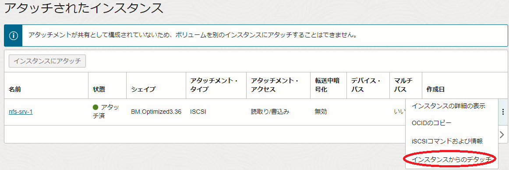
次に、表示される以下 ブロック・ボリュームのデタッチ 画面で、 デタッチの続行 ボタンをクリックします。
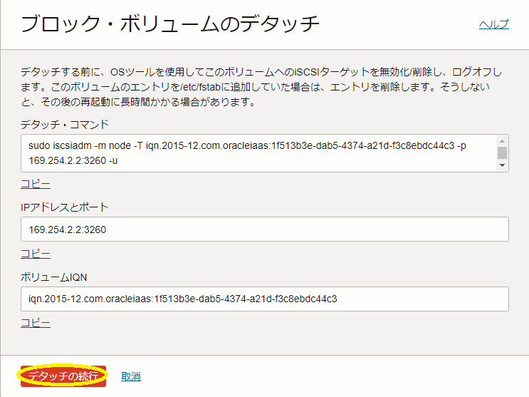
次に、表示される以下 ブロック・ボリュームのデタッチ 画面で、 デタッチ ボタンをクリックし、暫くしてデタッチが完了することを確認します。
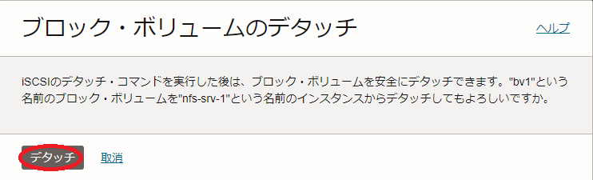
次に、以上の bv1 に対して実施した手順を bv2 に対して実行し、これをデタッチします。
1-4. ブロック・ボリュームの代替NFSサーバインスタンスへのアタッチ
本章は、 ブロック・ボリューム の bv1 と bv2 を nfs-srv-2 にアタッチします。
OCIコンソールにログインし、 ブロック・ボリューム NFSサーバの存在するリージョンを選択後、 ストレージ → ブロック・ボリューム とメニューを辿ります。
次に、表示される以下画面で、bv1 ボタンをクリックします。
次に、表示される以下画面で、 アタッチされたインスタンス メニューをクリックします。
次に、表示される以下 アタッチされたインスタンス フィールドで、 インスタンスにアタッチ ボタンをクリックします。
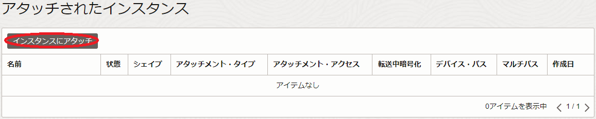
次に、表示される以下 インスタンスにアタッチ サイドバーの インスタンス フィールドで nfs-srv-2 を選択し、 アタッチ ボタンをクリックします。
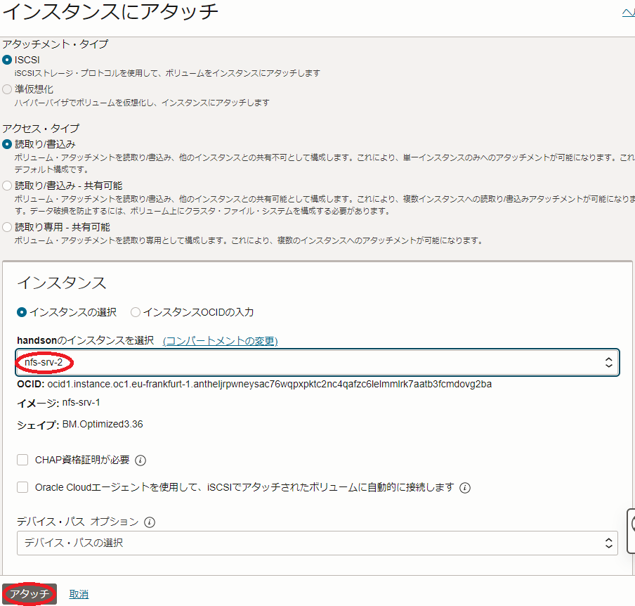
次に、表示される以下 インスタンスにアタッチ 画面で、 閉じる ボタンをクリックし、暫くしてアタッチが完了することを確認します。
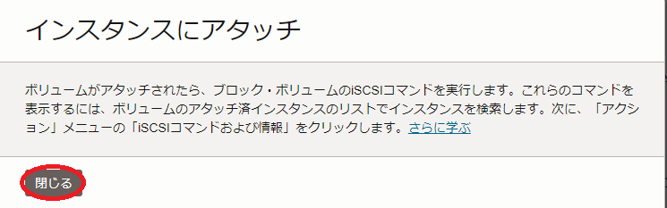
次に、OCIコンソールで、 ストレージ → ブロック・ボリューム とメニューを辿ります。
次に、表示される以下画面で、bv1 ボタンをクリックします。
次に、表示される以下画面で、 アタッチされたインスタンス メニューをクリックします。
次に、表示される以下 アタッチされたインスタンス フィールドで、 nfs-srv-2 の iSCSIコマンドおよび情報 ボタンをクリックします。
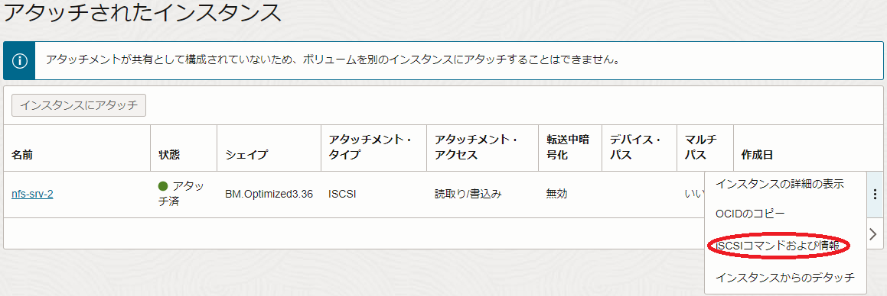
次に、表示される以下 iSCSIコマンドおよび情報 画面で、 アタッチ・コマンド フィールドの コピー ボタンをクリックし、 閉じる ボタンをクリックします。
次に、クリップボードにコピーされたコマンドを以下のように nfs-srv-2 のopcユーザで実行し、lsblkコマンドの出力に物理ボリューム sdb が含まれることを確認します。
$ sudo iscsiadm -m node -o new -T iqn.2015-12.com.oracleiaas:1f513b3e-dab5-4374-a21d-f3c8ebdc44c3 -p 169.254.2.2:3260
New iSCSI node [tcp:[hw=,ip=,net_if=,iscsi_if=default] 169.254.2.2,3260,-1 iqn.2015-12.com.oracleiaas:1f513b3e-dab5-4374-a21d-f3c8ebdc44c3] added
$ sudo iscsiadm -m node -o update -T iqn.2015-12.com.oracleiaas:1f513b3e-dab5-4374-a21d-f3c8ebdc44c3 -n node.startup -v automatic
$ sudo iscsiadm -m node -T iqn.2015-12.com.oracleiaas:1f513b3e-dab5-4374-a21d-f3c8ebdc44c3 -p 169.254.2.2:3260 -l
Logging in to [iface: default, target: iqn.2015-12.com.oracleiaas:1f513b3e-dab5-4374-a21d-f3c8ebdc44c3, portal: 169.254.2.2,3260]
Login to [iface: default, target: iqn.2015-12.com.oracleiaas:1f513b3e-dab5-4374-a21d-f3c8ebdc44c3, portal: 169.254.2.2,3260] successful.
$ lsblk
NAME MAJ:MIN RM SIZE RO TYPE MOUNTPOINT
sda 8:0 0 50G 0 disk
├─sda1 8:1 0 100M 0 part /boot/efi
├─sda2 8:2 0 1G 0 part /boot
└─sda3 8:3 0 48.9G 0 part
├─ocivolume-root 252:0 0 38.9G 0 lvm /
└─ocivolume-oled 252:1 0 10G 0 lvm /var/oled
sdb 8:16 0 1T 0 disk
nvme0n1 259:1 0 3.5T 0 disk
$
なお上記コマンドは、本テクニカルTipsを作成する際に使用している環境に於けるもので、実際には自身がOCIコンソールからクリップボードにコピーしたコマンドを使用します。
次に、以上の bv1 に対して実施した手順を bv2 に対して実行してこれをアタッチし、lsblkコマンドの出力に物理ボリューム sdc が含まれることを確認します。
1-5. 代替NFSサーバインスタンスでの復旧作業
本章は、代替NFSサーバインスタンスでNFSサービスを開始するための以下復旧作業を実施します。
- /etc/fstab修正
- NFSデータ領域ファイルシステムマウント
- NFSサービス開始
nfs-srv-2 の/etc/fstabファイルを以下のとおり修正します。
$ diff /etc/fstab_org /etc/fstab
31c31
< #/dev/vg1/lv01 /mnt/a xfs defaults 0 0
---
> /dev/vg1/lv01 /mnt/a xfs defaults 0 0
$
次に、以下コマンドを nfs-srv-2 のopcユーザで実行し、NFSデータ領域ファイルシステムをマウントし、障害発生前のデータが存在していることを確認します。
$ sudo systemctl daemon-reload
$ sudo mount /mnt/a
$ df -h /mnt/a
Filesystem Size Used Avail Use% Mounted on
/dev/mapper/vg1-lv01 2.0T 15G 2.0T 1% /mnt/a
$ ls -la /mnt/a
total 4
drwxr-xr-x 2 root root 22 Sep 29 12:32 .
drwxr-xr-x. 3 root root 15 Sep 29 10:12 ..
-rw-r--r--. 1 root root 210 Sep 29 10:24 test.txt
$
次に、以下コマンドを nfs-srv-2 のopcユーザで実行してNFSサービスを開始し、 /mnt/a がエクスポートされていることを確認します。
$ sudo systemctl enable --now nfs-server
Created symlink /etc/systemd/system/multi-user.target.wants/nfs-server.service → /usr/lib/systemd/system/nfs-server.service.
$ sudo exportfs
/mnt/a 10.0.0.0/16
$
1-6. NFSクライアントでの復旧作業
本章は、NFSサーバが nfs-srv-1 から nfs-srv-2 に変更されたため、これに伴う以下の復旧作業をNFSクライアントで実施します。
- /etc/fstab修正
- NFSクライアント再起動
nfs-cli の/etc/fstabファイルを以下のとおり修正します。
$ diff /etc/fstab_org /etc/fstab
32c32
< nfs-srv-1:/mnt/a /mnt/nfs/a nfs defaults 0 0
---
> nfs-srv-2:/mnt/a /mnt/nfs/a nfs defaults 0 0
$
次に、既存NFSサーバが障害でダウンした場合、NFSクライアントで既存NFSサーバのNFS領域をマウントしたままとなっており、代替NFSサーバのNFS領域をマウントできないため、以下コマンドを nfs-cli のopcユーザで実行し、OS再起動によりこの問題を解消します。
$ sudo shutdown -r now
次に、OS起動後、以下コマンドを nfs-cli のopcユーザで実行し、 nfs-srv-2 のNFSファイルシステムがマウントされ、障害発生前のデータにアクセスできることを確認します。
$ df -h /mnt/nfs/a
Filesystem Size Used Avail Use% Mounted on
nfs-srv-2:/mnt/a 2.0T 15G 2.0T 1% /mnt/nfs/a
$ cat /mnt/nfs/a/test.txt
This is a test file.
$